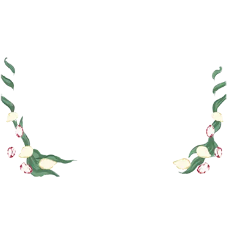
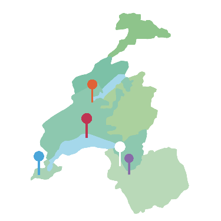

semence de pays



Semences de pays développe une production de semences reproductibles, rustiques et adaptées à une agriculture biologique proche des cycles de la nature, en collaboration avec les initiatives nourricières de proximité.
Points de ventes
nouvelle Terre Rue du Grand-Verger 12 1920 Martigny
Chez mamie Rue des Rois 17 1204 Genève
Le Topinambour Avenue William-Fraisse 9 1006 Lausanne
Ferme de Joran Chemin des Philosophes 15 1350 Orbe
Le Granier Route des Mines de Sel 1880 Bex